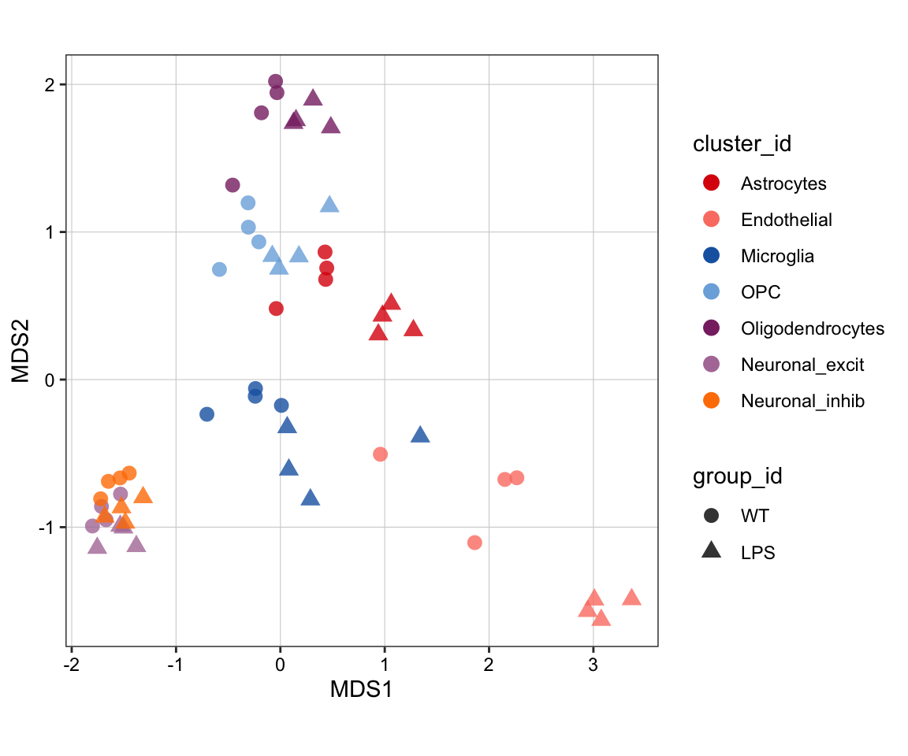
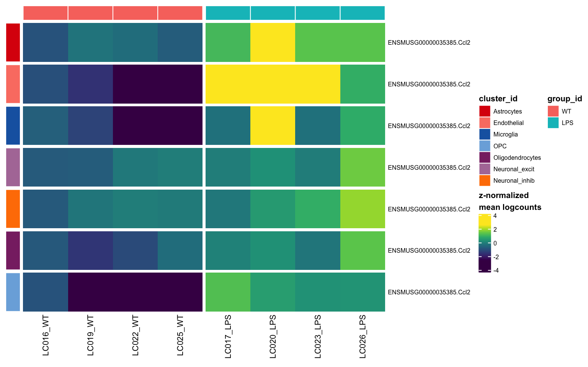
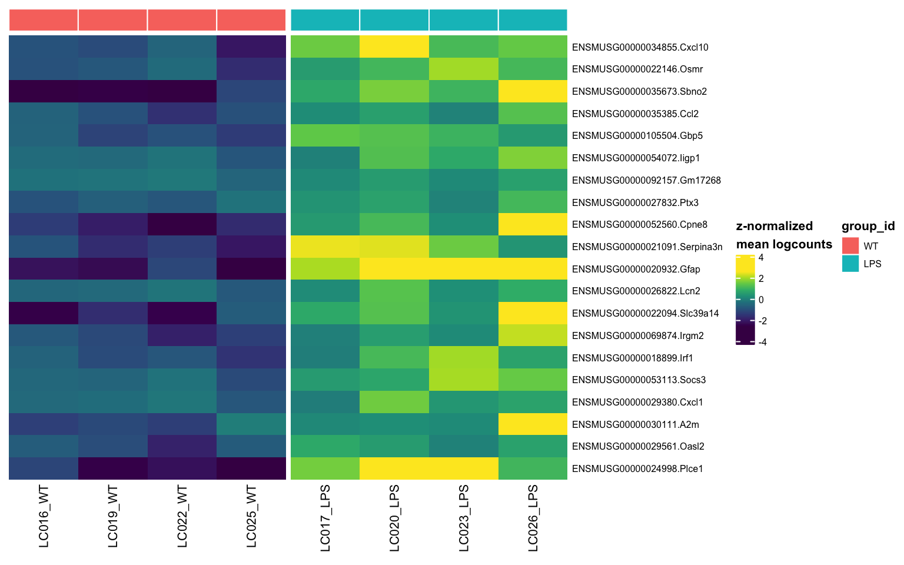
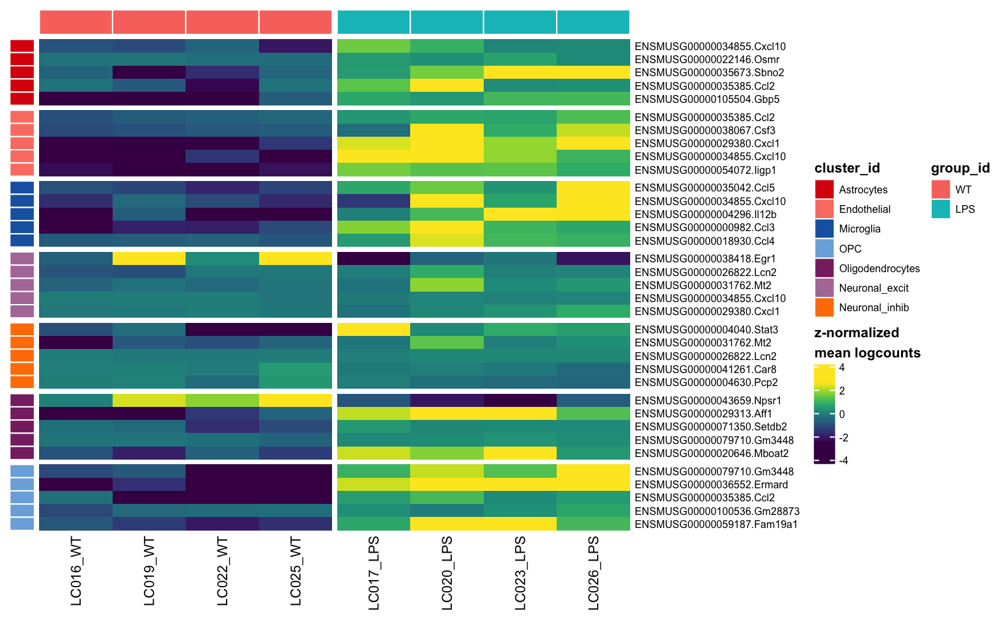
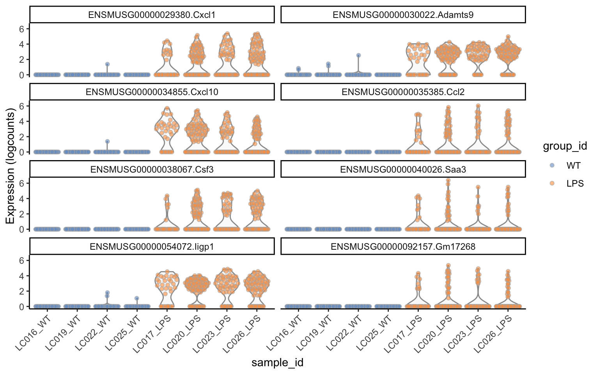
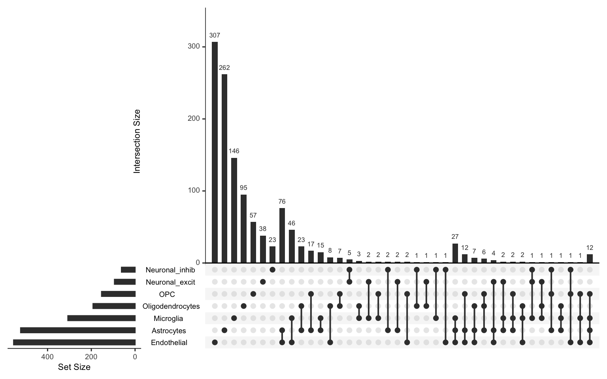

Last updated: 2019-09-05
Checks: 6 1
Knit directory: LPS/
This reproducible R Markdown analysis was created with workflowr (version 1.4.0). The Checks tab describes the reproducibility checks that were applied when the results were created. The Past versions tab lists the development history.
Great! Since the R Markdown file has been committed to the Git repository, you know the exact version of the code that produced these results.
Great job! The global environment was empty. Objects defined in the global environment can affect the analysis in your R Markdown file in unknown ways. For reproduciblity it’s best to always run the code in an empty environment.
The command set.seed(20190909) was run prior to running the code in the R Markdown file. Setting a seed ensures that any results that rely on randomness, e.g. subsampling or permutations, are reproducible.
Great job! Recording the operating system, R version, and package versions is critical for reproducibility.
To ensure reproducibility of the results, delete the cache directory 3-differential_cache and re-run the analysis. To have workflowr automatically delete the cache directory prior to building the file, set delete_cache = TRUE when running wflow_build() or wflow_publish().
Great job! Using relative paths to the files within your workflowr project makes it easier to run your code on other machines.
Great! You are using Git for version control. Tracking code development and connecting the code version to the results is critical for reproducibility. The version displayed above was the version of the Git repository at the time these results were generated.
Note that you need to be careful to ensure that all relevant files for the analysis have been committed to Git prior to generating the results (you can use wflow_publish or wflow_git_commit). workflowr only checks the R Markdown file, but you know if there are other scripts or data files that it depends on. Below is the status of the Git repository when the results were generated:
Ignored files:
Ignored: .DS_Store
Ignored: cheatsheet.log
Untracked files:
Untracked: .gitignore
Untracked: LPS/
Note that any generated files, e.g. HTML, png, CSS, etc., are not included in this status report because it is ok for generated content to have uncommitted changes.
There are no past versions. Publish this analysis with wflow_publish() to start tracking its development.
library(dplyr)
library(muscat)
library(scater)
library(SingleCellExperiment)
library(UpSetR)sce <- readRDS(file.path("output", "3-SCE_clustered.rds"))
# make WT reference group
sce$group_id <- relevel(sce$group_id, ref = "WT")
# reorder sample levels
m <- match(levels(sce$sample_id), sce$sample_id)
o <- order(sce$group_id[m])
sce$sample_id <- factor(sce$sample_id, levels = levels(sce$sample_id)[o])
# prep. SCE for 'muscat'
sce <- prepSCE(sce,
cluster_id = "cluster_id",
sample_id = "sample_id",
group_id = "group_id",
drop = FALSE)# compute pseudobulk (sum of counts) by cluster-sample
(pb <- aggregateData(sce, assay = "counts",
by = c("cluster_id", "sample_id"), fun = "sum"))class: SingleCellExperiment
dim: 27998 8
metadata(3): experiment_info agg_pars n_cells
assays(7): Astrocytes Endothelial ... Neuronal_excit
Neuronal_inhib
rownames(27998): ENSMUSG00000051951.Xkr4 ENSMUSG00000089699.Gm1992
... ENSMUSG00000096730.Vmn2r122
ENSMUSG00000095742.CAAA01147332.1
rowData names(0):
colnames(8): LC016_WT LC019_WT ... LC023_LPS LC026_LPS
colData names(2): group_id orig.ident
reducedDimNames(0):
spikeNames(0):
altExpNames(0):# pseudobulk-level MDS plot
pbMDS(pb)
# run edgeR on pseudobulks
res <- pbDS(pb, method = "edgeR", verbose = FALSE)
# reformat results
tbl <- resDS(sce, res, bind = "col")
# filter & sort
tbl <- filter(tbl, p_adj.loc < 0.05, logFC > 1)
tbl <- arrange(tbl, p_adj.loc)
# no. of DS genes per cluster
res_by_k <- split(tbl, tbl$cluster_id)
vapply(res_by_k, nrow, numeric(1)) Astrocytes Endothelial Microglia Neuronal_excit
523 555 307 94
Neuronal_inhib Oligodendrocytes OPC
62 192 153 # top hits in ea. cluster
top <- do.call("rbind", lapply(res_by_k, head, 3))
top <- select(top, -c("contrast", "p_adj.glb", "F"))
top$gene <- gsub("^.*\\.", "", top$gene)
format(data.frame(top, row.names = NULL), digits = 3) gene cluster_id logFC logCPM p_val p_adj.loc
1 Cxcl10 Astrocytes 10.40 8.44 2.99e-61 5.43e-57
2 Osmr Astrocytes 7.45 7.18 2.53e-41 2.30e-37
3 Sbno2 Astrocytes 5.03 8.14 5.89e-41 3.56e-37
4 Ccl2 Endothelial 10.80 10.10 2.52e-43 4.03e-39
5 Csf3 Endothelial 10.50 9.86 3.37e-42 2.69e-38
6 Cxcl1 Endothelial 9.19 10.20 1.93e-41 1.03e-37
7 Ccl5 Microglia 10.40 9.77 9.76e-25 1.63e-20
8 Cxcl10 Microglia 9.56 8.93 1.05e-23 8.72e-20
9 Il12b Microglia 9.43 8.82 2.13e-23 1.18e-19
10 Lcn2 Neuronal_excit 7.54 4.24 4.82e-10 3.38e-06
11 Mt2 Neuronal_excit 2.32 7.35 4.82e-10 3.38e-06
12 Cxcl10 Neuronal_excit 5.57 3.15 7.77e-10 4.09e-06
13 Stat3 Neuronal_inhib 2.03 6.67 4.48e-15 8.96e-11
14 Mt2 Neuronal_inhib 2.26 7.80 4.73e-14 4.73e-10
15 Lcn2 Neuronal_inhib 5.83 3.91 1.69e-12 1.12e-08
16 Aff1 Oligodendrocytes 3.18 7.22 2.64e-21 1.14e-17
17 Setdb2 Oligodendrocytes 3.40 6.88 2.51e-21 1.14e-17
18 Gm3448 Oligodendrocytes 3.08 7.31 2.35e-21 1.14e-17
19 Gm3448 OPC 4.31 9.37 2.26e-43 3.75e-39
20 Ermard OPC 3.46 9.87 3.14e-35 2.61e-31
21 Ccl2 OPC 8.33 7.51 9.83e-35 5.43e-31# single gene across all clusters
pbHeatmap(sce, res, g = "ENSMUSG00000035385.Ccl2")
# top-20 in single cluster
pbHeatmap(sce, res, k = "Astrocytes")
# top-5 in ea. cluster
pbHeatmap(sce, res, top_n = 5)
# split cells by cluster
cs_by_k <- split(colnames(sce), sce$cluster_id)
plotExpression(sce[, cs_by_k$Endothelial],
features = res_by_k$Endothelial$gene[seq_len(8)],
x = "sample_id", colour_by = "group_id") + theme_classic() +
theme(axis.text.x = element_text(angle = 45, hjust = 1))
ds_gs <- lapply(res_by_k, pull, "gene")
upset(fromList(ds_gs), sets = levels(sce$cluster_id))
saveRDS(res, file.path("output", "DS_results.rds"))
sessionInfo()R version 3.6.0 beta (2019-04-15 r76395)
Platform: x86_64-apple-darwin15.6.0 (64-bit)
Running under: macOS Mojave 10.14.6
Matrix products: default
BLAS: /Library/Frameworks/R.framework/Versions/3.6/Resources/lib/libRblas.0.dylib
LAPACK: /Library/Frameworks/R.framework/Versions/3.6/Resources/lib/libRlapack.dylib
locale:
[1] en_US.UTF-8/en_US.UTF-8/en_US.UTF-8/C/en_US.UTF-8/en_US.UTF-8
attached base packages:
[1] parallel stats4 stats graphics grDevices utils datasets
[8] methods base
other attached packages:
[1] UpSetR_1.4.0 muscat_0.99.8
[3] scater_1.13.18 ggplot2_3.2.1
[5] SingleCellExperiment_1.7.7 SummarizedExperiment_1.15.8
[7] DelayedArray_0.11.4 BiocParallel_1.19.2
[9] matrixStats_0.54.0 Biobase_2.45.0
[11] GenomicRanges_1.37.14 GenomeInfoDb_1.21.1
[13] IRanges_2.19.14 S4Vectors_0.23.20
[15] BiocGenerics_0.31.5 dplyr_0.8.3
loaded via a namespace (and not attached):
[1] backports_1.1.4 circlize_0.4.7
[3] Hmisc_4.2-0 blme_1.0-4
[5] workflowr_1.4.0 plyr_1.8.4
[7] lazyeval_0.2.2 TMB_1.7.15
[9] splines_3.6.0 listenv_0.7.0
[11] digest_0.6.20 foreach_1.4.7
[13] htmltools_0.3.6 viridis_0.5.1
[15] gdata_2.18.0 lmerTest_3.1-0
[17] magrittr_1.5 checkmate_1.9.4
[19] memoise_1.1.0 cluster_2.1.0
[21] doParallel_1.0.15 limma_3.41.15
[23] globals_0.12.4 ComplexHeatmap_2.1.0
[25] annotate_1.63.0 prettyunits_1.0.2
[27] colorspace_1.4-1 blob_1.2.0
[29] xfun_0.9 crayon_1.3.4
[31] RCurl_1.95-4.12 genefilter_1.67.1
[33] lme4_1.1-21 zeallot_0.1.0
[35] survival_2.44-1.1 iterators_1.0.12
[37] glue_1.3.1 gtable_0.3.0
[39] zlibbioc_1.31.0 XVector_0.25.0
[41] GetoptLong_0.1.7 BiocSingular_1.1.5
[43] future.apply_1.3.0 shape_1.4.4
[45] scales_1.0.0 DBI_1.0.0
[47] edgeR_3.27.13 Rcpp_1.0.2
[49] viridisLite_0.3.0 xtable_1.8-4
[51] progress_1.2.2 htmlTable_1.13.1
[53] clue_0.3-57 foreign_0.8-72
[55] bit_1.1-14 rsvd_1.0.2
[57] Formula_1.2-3 htmlwidgets_1.3
[59] gplots_3.0.1.1 RColorBrewer_1.1-2
[61] acepack_1.4.1 pkgconfig_2.0.2
[63] XML_3.98-1.20 nnet_7.3-12
[65] locfit_1.5-9.1 labeling_0.3
[67] tidyselect_0.2.5 rlang_0.4.0
[69] reshape2_1.4.3 AnnotationDbi_1.47.1
[71] munsell_0.5.0 tools_3.6.0
[73] RSQLite_2.1.2 evaluate_0.14
[75] stringr_1.4.0 yaml_2.2.0
[77] knitr_1.24 bit64_0.9-7
[79] fs_1.3.1 caTools_1.17.1.2
[81] purrr_0.3.2 future_1.14.0
[83] nlme_3.1-141 pbkrtest_0.4-7
[85] compiler_3.6.0 rstudioapi_0.10
[87] beeswarm_0.2.3 png_0.1-7
[89] variancePartition_1.15.4 tibble_2.1.3
[91] geneplotter_1.63.0 stringi_1.4.3
[93] lattice_0.20-38 Matrix_1.2-17
[95] nloptr_1.2.1 vctrs_0.2.0
[97] pillar_1.4.2 GlobalOptions_0.1.0
[99] BiocNeighbors_1.3.3 cowplot_1.0.0
[101] data.table_1.12.2 bitops_1.0-6
[103] irlba_2.3.3 colorRamps_2.3
[105] R6_2.4.0 latticeExtra_0.6-28
[107] KernSmooth_2.23-15 gridExtra_2.3
[109] vipor_0.4.5 codetools_0.2-16
[111] gtools_3.8.1 boot_1.3-23
[113] MASS_7.3-51.4 assertthat_0.2.1
[115] DESeq2_1.25.10 rprojroot_1.3-2
[117] rjson_0.2.20 withr_2.1.2
[119] sctransform_0.2.0 GenomeInfoDbData_1.2.1
[121] hms_0.5.1 grid_3.6.0
[123] rpart_4.1-15 glmmTMB_0.2.3
[125] minqa_1.2.4 rmarkdown_1.15
[127] DelayedMatrixStats_1.7.1 git2r_0.26.1
[129] numDeriv_2016.8-1.1 base64enc_0.1-3
[131] ggbeeswarm_0.6.0